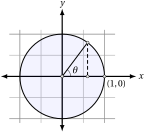

Code
source("../dsan-globals/_globals.r")
set.seed(5300)PPOL 6805 / DSAN 6750: GIS for Spatial Data Science
Fall 2025
Today’s Planned Schedule:
| Start | End | Topic | |
|---|---|---|---|
| Lecture | 6:30pm | 6:50pm | Logistics 1: JupyterHub x Positron → |
| 6:50pm | 7:15pm | Logistics 2: Reducing Fear → | |
| 7:20pm | 7:50pm | Building Our First Map! → | |
| Break! | 7:50pm | 8:00pm | |
| 8:00pm | 8:30pm | Raster Data → | |
| 8:30pm | 9:00pm | Finding GIS Data → |
source("../dsan-globals/_globals.r")
set.seed(5300)\[ \DeclareMathOperator*{\argmax}{argmax} \DeclareMathOperator*{\argmin}{argmin} \newcommand{\bigexp}[1]{\exp\mkern-4mu\left[ #1 \right]} \newcommand{\bigexpect}[1]{\mathbb{E}\mkern-4mu \left[ #1 \right]} \newcommand{\definedas}{\overset{\small\text{def}}{=}} \newcommand{\definedalign}{\overset{\phantom{\text{defn}}}{=}} \newcommand{\eqeventual}{\overset{\text{eventually}}{=}} \newcommand{\Err}{\text{Err}} \newcommand{\expect}[1]{\mathbb{E}[#1]} \newcommand{\expectsq}[1]{\mathbb{E}^2[#1]} \newcommand{\fw}[1]{\texttt{#1}} \newcommand{\given}{\mid} \newcommand{\green}[1]{\color{green}{#1}} \newcommand{\heads}{\outcome{heads}} \newcommand{\iid}{\overset{\text{\small{iid}}}{\sim}} \newcommand{\lik}{\mathcal{L}} \newcommand{\loglik}{\ell} \DeclareMathOperator*{\maximize}{maximize} \DeclareMathOperator*{\minimize}{minimize} \newcommand{\mle}{\textsf{ML}} \newcommand{\nimplies}{\;\not\!\!\!\!\implies} \newcommand{\orange}[1]{\color{orange}{#1}} \newcommand{\outcome}[1]{\textsf{#1}} \newcommand{\param}[1]{{\color{purple} #1}} \newcommand{\pgsamplespace}{\{\green{1},\green{2},\green{3},\purp{4},\purp{5},\purp{6}\}} \newcommand{\pedge}[2]{\require{enclose}\enclose{circle}{~{#1}~} \rightarrow \; \enclose{circle}{\kern.01em {#2}~\kern.01em}} \newcommand{\pnode}[1]{\require{enclose}\enclose{circle}{\kern.1em {#1} \kern.1em}} \newcommand{\ponode}[1]{\require{enclose}\enclose{box}[background=lightgray]{{#1}}} \newcommand{\pnodesp}[1]{\require{enclose}\enclose{circle}{~{#1}~}} \newcommand{\purp}[1]{\color{purple}{#1}} \newcommand{\sign}{\text{Sign}} \newcommand{\spacecap}{\; \cap \;} \newcommand{\spacewedge}{\; \wedge \;} \newcommand{\tails}{\outcome{tails}} \newcommand{\Var}[1]{\text{Var}[#1]} \newcommand{\bigVar}[1]{\text{Var}\mkern-4mu \left[ #1 \right]} \]
Top secret translation for me: zi4 wo2 ge1 ming4
Our teaching should be governed, not by a desire to make students learn things, but by the endeavor to keep burning within them that light which is called curiosity. (Montessori 1916)
| Take the time/energy you're using to worry about... | Use it instead to worry about... |
|---|---|
|
Learning GIS |
Geometers solved w/geometry (300 BC)…

…Algebraists solved w/algebra (2000 BC)…
\[ \begin{align*} &ax^2 + bx + c = 0 \\ \Rightarrow \; & x_+ = \frac{-b + \sqrt{b^2 - 4ac}}{2a} \end{align*} \]
‚ĶFrom 1637 onwards, whichever is easier! ü§Øü§Øü§Ø (Isomorphism)


(Quick demo adapted from Sherry Xie’s R Consortium Workshop: Analyzing Geospatial Data in R, using DC rather than Philadelphia open data.)
library(sf)
# Load DC tracts data
dc_sf_fpath <- "data/DC_Census_2020/Census_Tracts_in_2020.shp"
dc_sf <- st_read(dc_sf_fpath);Reading layer `Census_Tracts_in_2020' from data source
`/Users/jpj/gtown-local/ppol6805/w02/data/DC_Census_2020/Census_Tracts_in_2020.shp'
using driver `ESRI Shapefile'
Simple feature collection with 206 features and 315 fields
Geometry type: POLYGON
Dimension: XY
Bounding box: xmin: -8584933 ymin: 4691871 xmax: -8561515 ymax: 4721078
Projected CRS: WGS 84 / Pseudo-Mercatorcols_to_keep <- c("OBJECTID", "TRACT", "GEOID", "ALAND", "AWATER", "STUSAB", "SUMLEV", "GEOCODE", "STATE", "NAME", "POP100", "HU100", "geometry")
dc_sf <- dc_sf |> select(cols_to_keep)Warning: Using an external vector in selections was deprecated in tidyselect 1.1.0.
ℹ Please use `all_of()` or `any_of()` instead.
# Was:
data %>% select(cols_to_keep)
# Now:
data %>% select(all_of(cols_to_keep))
See <https://tidyselect.r-lib.org/reference/faq-external-vector.html>.sf Objectsdc_sf is an object of type sf (short for “simple feature”), which extends data.frame, and contains features which have type POLYGON
class(dc_sf)[1] "sf" "data.frame"head(dc_sf)| OBJECTID | TRACT | GEOID | ALAND | AWATER | STUSAB | SUMLEV | GEOCODE | STATE | NAME | POP100 | HU100 | geometry |
|---|---|---|---|---|---|---|---|---|---|---|---|---|
| 1 | 002002 | 11001002002 | 849376 | 0 | DC | 140 | 11001002002 | 11 | Census Tract 20.02 | 4072 | 1532 | POLYGON ((-8575655 4714476,… |
| 2 | 002101 | 11001002101 | 600992 | 0 | DC | 140 | 11001002101 | 11 | Census Tract 21.01 | 5687 | 2335 | POLYGON ((-8574745 4715676,… |
| 3 | 002102 | 11001002102 | 725975 | 0 | DC | 140 | 11001002102 | 11 | Census Tract 21.02 | 5099 | 2221 | POLYGON ((-8573824 4715684,… |
| 4 | 002201 | 11001002201 | 415173 | 0 | DC | 140 | 11001002201 | 11 | Census Tract 22.01 | 3485 | 1229 | POLYGON ((-8574654 4714781,… |
| 5 | 002202 | 11001002202 | 698895 | 566 | DC | 140 | 11001002202 | 11 | Census Tract 22.02 | 3339 | 1454 | POLYGON ((-8573792 4714811,… |
| 6 | 000101 | 11001000101 | 199776 | 5261 | DC | 140 | 11001000101 | 11 | Census Tract 1.01 | 1406 | 999 | POLYGON ((-8577962 4708867,… |
sf ObjectsWith some rare but important exceptions (which we’ll learn!), can be used just like a data.frame / tibble:
str(dc_sf) # view structureClasses 'sf' and 'data.frame': 206 obs. of 13 variables:
$ OBJECTID: int 1 2 3 4 5 6 7 8 9 10 ...
$ TRACT : chr "002002" "002101" "002102" "002201" ...
$ GEOID : chr "11001002002" "11001002101" "11001002102" "11001002201" ...
$ ALAND : int 849376 600992 725975 415173 698895 199776 1706484 505004 776435 1042157 ...
$ AWATER : int 0 0 0 0 566 5261 516665 0 439661 2305 ...
$ STUSAB : chr "DC" "DC" "DC" "DC" ...
$ SUMLEV : int 140 140 140 140 140 140 140 140 140 140 ...
$ GEOCODE : chr "11001002002" "11001002101" "11001002102" "11001002201" ...
$ STATE : int 11 11 11 11 11 11 11 11 11 11 ...
$ NAME : chr "Census Tract 20.02" "Census Tract 21.01" "Census Tract 21.02" "Census Tract 22.01" ...
$ POP100 : int 4072 5687 5099 3485 3339 1406 3417 4108 4672 6161 ...
$ HU100 : int 1532 2335 2221 1229 1454 999 2053 11 2169 2845 ...
$ geometry:sfc_POLYGON of length 206; first list element: List of 1
..$ : num [1:155, 1:2] -8575655 -8575655 -8575655 -8575655 -8575655 ...
..- attr(*, "class")= chr [1:3] "XY" "POLYGON" "sfg"
- attr(*, "sf_column")= chr "geometry"
- attr(*, "agr")= Factor w/ 3 levels "constant","aggregate",..: NA NA NA NA NA NA NA NA NA NA ...
..- attr(*, "names")= chr [1:12] "OBJECTID" "TRACT" "GEOID" "ALAND" ...sf Objectshead(dc_sf) # view first several rows| OBJECTID | TRACT | GEOID | ALAND | AWATER | STUSAB | SUMLEV | GEOCODE | STATE | NAME | POP100 | HU100 | geometry |
|---|---|---|---|---|---|---|---|---|---|---|---|---|
| 1 | 002002 | 11001002002 | 849376 | 0 | DC | 140 | 11001002002 | 11 | Census Tract 20.02 | 4072 | 1532 | POLYGON ((-8575655 4714476,… |
| 2 | 002101 | 11001002101 | 600992 | 0 | DC | 140 | 11001002101 | 11 | Census Tract 21.01 | 5687 | 2335 | POLYGON ((-8574745 4715676,… |
| 3 | 002102 | 11001002102 | 725975 | 0 | DC | 140 | 11001002102 | 11 | Census Tract 21.02 | 5099 | 2221 | POLYGON ((-8573824 4715684,… |
| 4 | 002201 | 11001002201 | 415173 | 0 | DC | 140 | 11001002201 | 11 | Census Tract 22.01 | 3485 | 1229 | POLYGON ((-8574654 4714781,… |
| 5 | 002202 | 11001002202 | 698895 | 566 | DC | 140 | 11001002202 | 11 | Census Tract 22.02 | 3339 | 1454 | POLYGON ((-8573792 4714811,… |
| 6 | 000101 | 11001000101 | 199776 | 5261 | DC | 140 | 11001000101 | 11 | Census Tract 1.01 | 1406 | 999 | POLYGON ((-8577962 4708867,… |
sf Objectsdim(dc_sf) # view dimensions[1] 206 13dc_sf[1,] # select first row| OBJECTID | TRACT | GEOID | ALAND | AWATER | STUSAB | SUMLEV | GEOCODE | STATE | NAME | POP100 | HU100 | geometry |
|---|---|---|---|---|---|---|---|---|---|---|---|---|
| 1 | 002002 | 11001002002 | 849376 | 0 | DC | 140 | 11001002002 | 11 | Census Tract 20.02 | 4072 | 1532 | POLYGON ((-8575655 4714476,… |
sf Objectshead(dc_sf$NAME) # select column by name [1] "Census Tract 20.02" "Census Tract 21.01" "Census Tract 21.02"
[4] "Census Tract 22.01" "Census Tract 22.02" "Census Tract 1.01" head(dc_sf[,4]) # select column by number| ALAND | geometry |
|---|---|
| 849376 | POLYGON ((-8575655 4714476,… |
| 600992 | POLYGON ((-8574745 4715676,… |
| 725975 | POLYGON ((-8573824 4715684,… |
| 415173 | POLYGON ((-8574654 4714781,… |
| 698895 | POLYGON ((-8573792 4714811,… |
| 199776 | POLYGON ((-8577962 4708867,… |
# We can extract the geometry with the st_geometry function
dc_geo <- st_geometry(dc_sf)
#pt_geo
# Plot the geometry with base R's plot() function
plot(dc_geo)
ggplot!dc_sf |>
ggplot() +
geom_sf() +
theme_classic()
POLYGONPOLYGONs may make sense for demographers, but how about someone studying air pollution in DC? (Smog, for example, does not confine itself to census tracts!)dc_union_sf <- sf::st_union(dc_sf)
dc_union_sf |>
ggplot() +
geom_sf() +
theme_classic()
terra)library(terra)terra 1.7.78
Attaching package: 'terra'The following object is masked from 'package:tidyr':
extractdc_SpatVector <- terra::vect(dc_union_sf)
rast_template <- rast(ext(dc_SpatVector), resolution = 1000, crs = crs(dc_SpatVector))
dc_SpatRaster <- terra::rasterize(dc_SpatVector, rast_template)
dim(dc_SpatRaster)[1] 29 23 1plot(dc_SpatRaster)Welcome to Gridtown!
set.seed(6805)
library(terra)
gridtown <- terra::rast(
nrows = 4, ncols = 4,
xmin = 0, xmax = 4, ymin = 0, ymax = 4,
vals = sample(1:16)
)
plot(gridtown)
text(
gridtown,
labels=1:16,
halo=TRUE, hc="black", col="white", hw=0.2
)plot(gridtown)
text(gridtown, halo=TRUE, hc="black", col="white", hw=0.2)